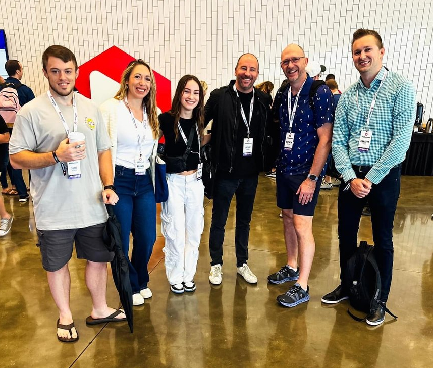
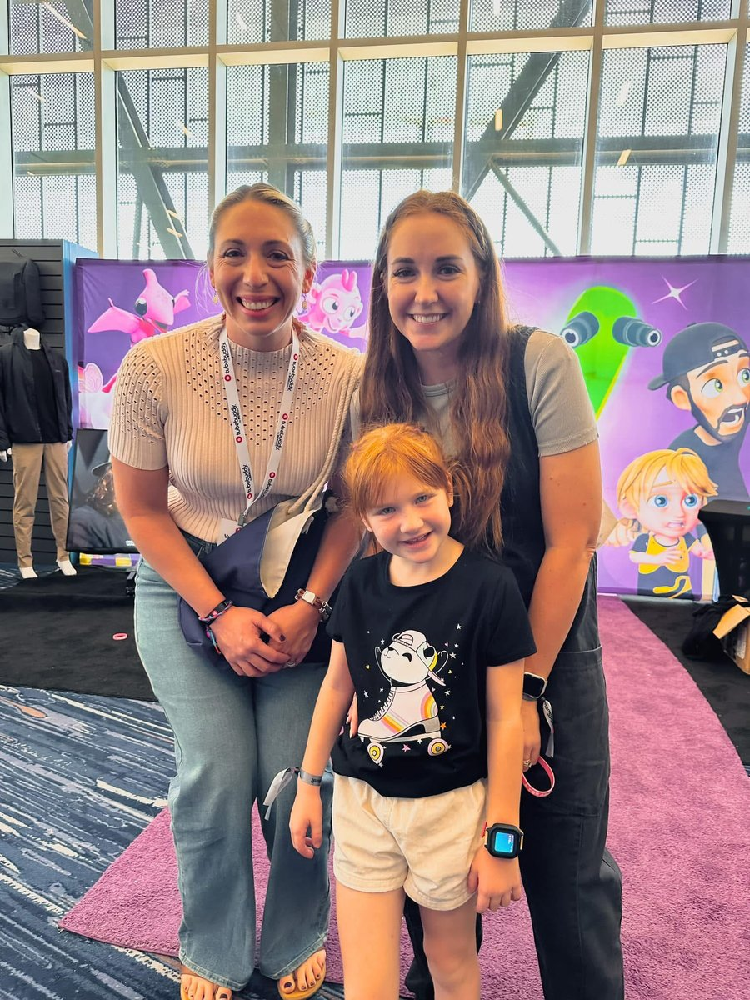
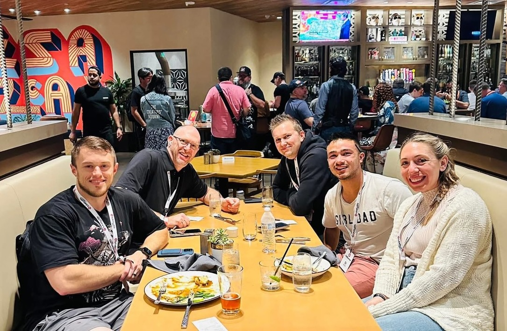
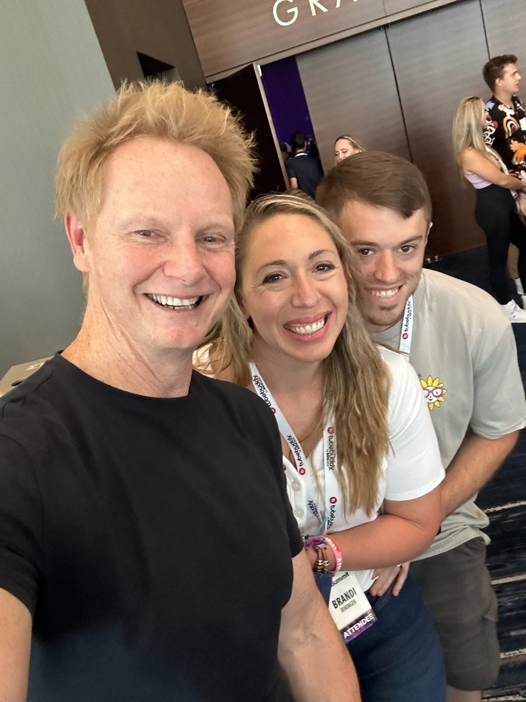

Full-pipeline creator. Built a 30K-subscriber YouTube channel from zero. Shoot, edit, publish, grow.
Built a children's YouTube channel from zero to over 30,000 subscribers as the full-stack producer — handling every part of the pipeline from concept and filming through editing, thumbnail design, SEO optimization, and growth strategy. A true family project: my wife was involved in creative direction in every decision, and the kids were always eager to jump in, making it as much fun as it was work.
This wasn't just editing clips. I managed content calendars, researched trending topics in the kids' content space, designed eye-catching thumbnails optimized for click-through rate, and iterated on formats based on audience retention data. The channel grew organically through consistent quality and smart positioning.
Video editor for the UnityNow! podcast — a show focused on bridging America's political and social divides. Hosted by Toby Davis, Gabe Garber, and Kimberly Kolb Eakin, the podcast features conversations with authors, activists, and commentators exploring common ground.
Beyond editing, I joined weekly discussions and participated in making decisions about the podcast's direction and future. Handled post-production editing for video episodes, creating polished cuts from multi-camera recordings. Also served as a live OBS Studio operator — managing real-time scene transitions, camera switching, and broadcast quality during live recordings.
Some of my most meaningful production work happens off-platform. I create deeply personal tribute videos for birthdays and milestones — spending a week or more gathering footage and recordings from friends and family, curating favorite songs, and weaving it all into something that tells the story of a person's life and impact.
These aren't slideshows. They're crafted narratives — timed to music, paced for emotional impact, and made with care. It's the kind of work where every detail matters because the person it's for matters.
A newer channel I'm building with my wife Brandi, who's a real estate broker serving Western North Carolina. The plan is to combine my production background with her local market expertise — neighborhood tours, home buying tips, and a look at what makes WNC such a great place to live. Still early, but we're excited about where it's headed.
Attended VidSummit to dive deep into YouTube strategy and content creation at scale. Researched channels like A for Adley, Oaks Playhouse, Jordan Matter, and many more — studying what drives audience growth, retention, and engagement at the highest levels of the platform.
Beyond the sessions, VidSummit was about connecting with creators and industry people who think about video the same way I think about code — obsessively, with an eye on craft and data. Made great friends and met the YouTubers behind some of the biggest channels in the kids' and family content space.




A full toolkit spanning the entire video production pipeline — from filming and live switching to post-production and audience growth.
Camera setup, lighting, framing, and shot composition. Comfortable directing talent and managing multi-camera shoots for both studio and on-location content.
Full post-production — cutting, color correction, audio mixing, motion graphics, and pacing. From quick YouTube cuts to polished podcast episodes and emotional personal films.
Real-time OBS Studio operation for live podcasts and streams. Multi-camera switching, scene transitions, overlay management, and broadcast monitoring.
Eye-catching thumbnails optimized for click-through rate. Consistent brand visual identity across channels. Typography, color theory, and composition for maximum impact in a crowded feed.
YouTube algorithm understanding, keyword research for video titles and descriptions, content calendar planning, audience retention analysis, and organic growth strategy.
Podcast audio editing, noise reduction, level normalization, music bed selection, and mixing. Clean audio is the foundation of good video — and good podcasts.
I take on selective video projects that align with my values. If you have something meaningful to create, let's talk.
Get in Touch